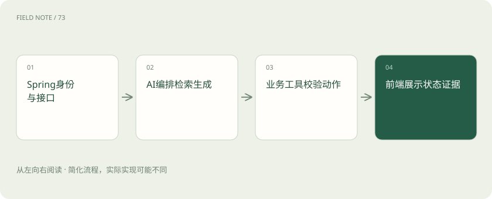
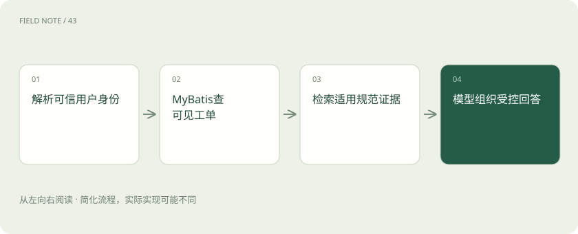
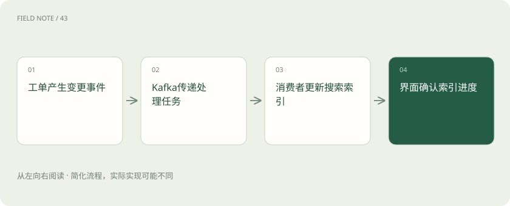

先读哪些知识
先用一个类比理解
类比只帮助建立直觉，不等同于技术的完整机制。
一图看懂

从熟悉的请求入口开始
用户在门户中问：“我的中间件工单为什么还没解决？”请求先经过身份认证、租户解析和业务权限，之后才进入 AI 处理。模型不应收到数据库里所有工单再自行挑选，后端必须先限制它能接触的业务对象。
这条原则意味着 Java 团队无需因为使用大模型就重写已有系统。Spring Boot 继续提供接口与应用组织，已有服务继续掌握订单、工单和用户事实，AI 层负责把用户表达转为受控查询与有证据的回答。
Spring AI 增加的应用抽象
Spring AI 提供面向模型、向量存储、工具及相关 AI 应用能力的抽象，并与 Spring 生态的配置和应用方式衔接。它让 Java 服务更容易组织模型交互，但不是新的业务数据库，也不代替 Spring Security 等既有授权机制。
团队可以在普通服务方法中调用 AI 组件，让检索证据和业务工具保持清晰边界。是否使用某个封装，应看它是否降低供应商适配和应用组合成本；不要因为名称中包含 Spring，就推断所有外部服务行为已经完全统一。
LangChain4j 的 Java 组合方式
LangChain4j 围绕语言模型、工具、检索增强与 AI 服务等提供 Java 开发能力，并可与 Spring 等应用环境集成。它与 Python 的 LangChain 共享问题领域，但不是可以逐行照搬 Python 教程的同一套接口。
选择它时应检查当前模型适配、检索策略和会话管理是否满足项目需要。与 Spring AI 的比较应落实到同一案例的实现清晰度、扩展点和运行结果，而不是凭名称判断谁更“原生”或更适合所有 Java 团队。
图解：我的工单问答链

MyBatis 与业务库继续管事实
MyBatis 等持久层负责把受控查询映射到业务数据库。查工单时必须包含当前用户与租户条件，模型提供的工单号只是输入，不能覆盖服务端解析出的身份。需要审批或变更状态时，由领域服务执行业务规则。
不要让模型生成任意 SQL 后直接使用生产凭据执行。即便只读查询也可能越权或造成高负载。将“查询我的工单摘要”暴露成范围明确的业务工具，比暴露“执行数据库语句”更容易审查和维护。
ES、Redis 与知识检索的分工
Elasticsearch 可承担全文搜索等检索任务，具备相应能力的部署也可参与向量与混合检索；具体取决于版本和配置。Redis 可用于缓存、限流及任务协调等场景，但缓存命中不证明数据仍是最新，也不替代业务源记录。
知识助手应把规范文档索引与工单事实查询分开理解。规范说明处理方法，数据库说明当前工单状态。若缓存了回答，还需将用户身份和资料版本纳入缓存设计，避免把甲用户的私有工单答案返回给乙用户。
Kafka 承担事件与异步流程
长文档索引、工单更新后的知识同步或耗时分析可以通过 Kafka 等消息系统异步推进。消息系统负责传递事件，消费者负责幂等处理，AI 框架负责对应处理步骤；“用了消息队列”不等于外部动作只执行一次。
例如工单关闭事件重复投递时，消费者应根据工单和事件标识避免重复生成归档。若状态已更新而索引尚未完成，页面应显示处理进度，回答也应承认搜索资料存在延迟，而不是把所有系统描绘成瞬间一致。
React 与 Vercel AI SDK 的位置
React 可以组织前端组件、会话列表和状态展示。Vercel AI SDK 提供面向 JavaScript 与 TypeScript 的 AI 应用及交互能力，适合相关前后端栈，但它不是 Java 后端框架，也不替代业务接口的身份和授权。
Java 后端与前端流式交互时，应明确事件格式、错误、取消和最终结果。界面需要区分正在查证、需要补充资料和操作已完成，不能只显示模型不断输出的文本；收到文字片段也不代表业务事务已经提交。
图解：异步索引的最终一致

先建立最小可验收链路
第一阶段只实现当前用户工单查询与带引用的规范解释，复用现有鉴权、数据库和搜索服务。待回答质量与权限边界通过验证后，再增加审批、异步分析或动态 Agent。复杂框架应由实际控制需求引入。
自检：Spring AI 或 LangChain4j 的工具参数通过校验，是否就能执行工单关闭？不能。语法正确只说明参数形式可接受，领域服务还须检查身份、状态转换和审批条件，并返回真实业务结果。
放在一起对比
| 组件 | 继续负责 | AI层不能替代 |
|---|---|---|
| Spring Boot / Security | 接口、身份与授权 | 服务端用户边界 |
| MyBatis / 数据库 | 业务事实与持久化 | 可核对的工单状态 |
| Kafka | 事件传递与异步解耦 | 消费者的幂等设计 |
| Redis / ES | 缓存协调与信息检索 | 版本及可见性治理 |
| Spring AI / LangChain4j | 模型、工具与RAG组合 | 领域业务规则 |
| React / AI SDK | 交互与流式展示 | 真实业务成功回执 |
放进真实场景
用户在门户中问：“我的中间件工单为什么还没解决？”请求先经过身份认证、租户解析和业务权限，之后才进入 AI 处理。模型不应收到数据库里所有工单再自行挑选，后端必须先限制它能接触的业务对象。
别踩这个误区
想一想
模型给出正确工单号，能否跳过后端租户过滤？
不能。工单号只是调用输入，服务端必须以可信身份限制查询和操作范围，不能让模型参数覆盖授权条件。
关联阅读
资料与边界
本文为原创知识讲解。类比和图示经过简化；示例数字不代表实测或报价。整理日期：2026-11-04。文末列出对应技术的原始资料，具体功能与版本支持请以原文为准。